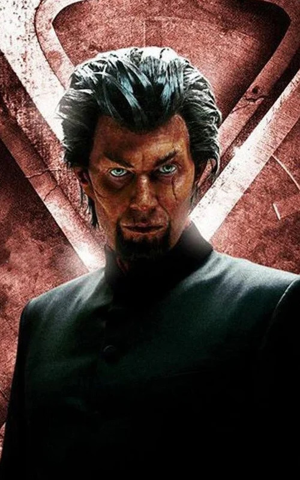
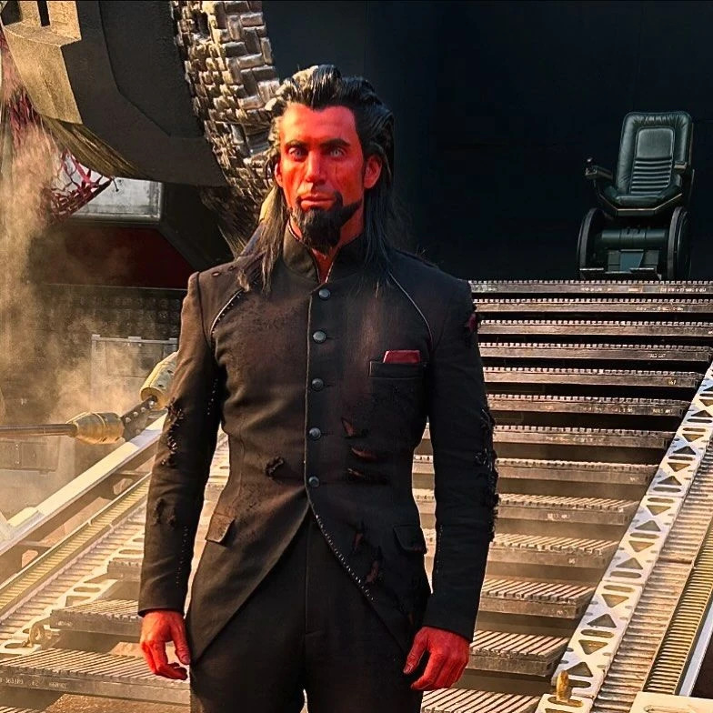
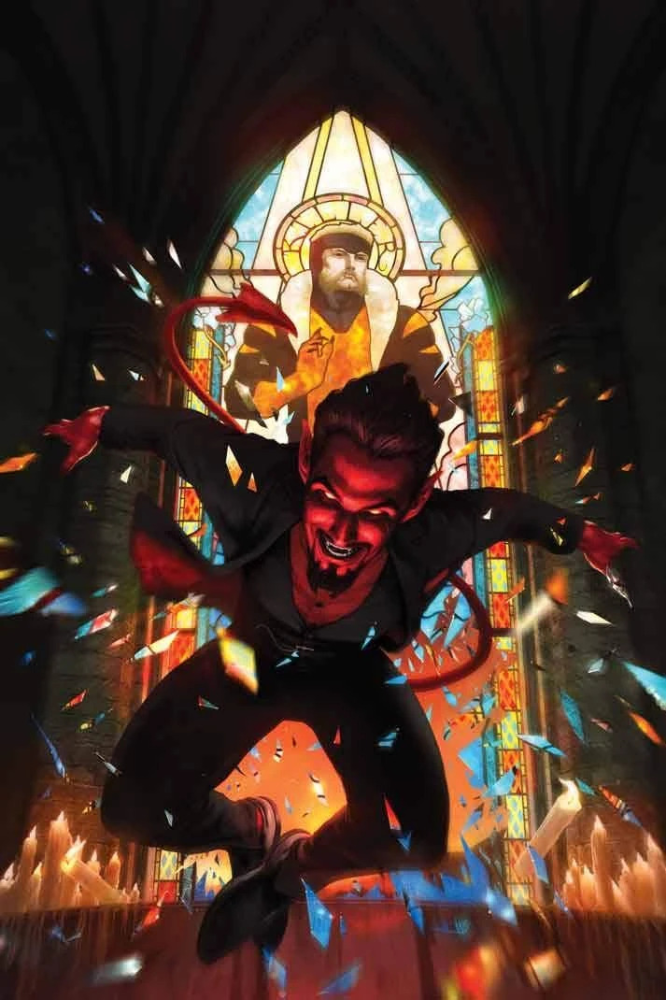
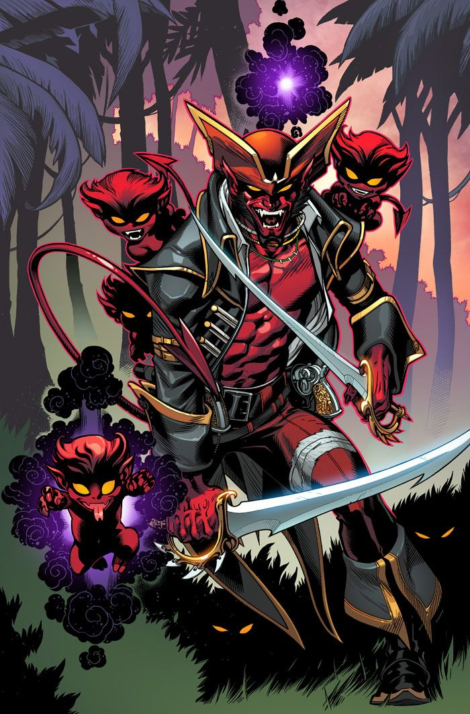
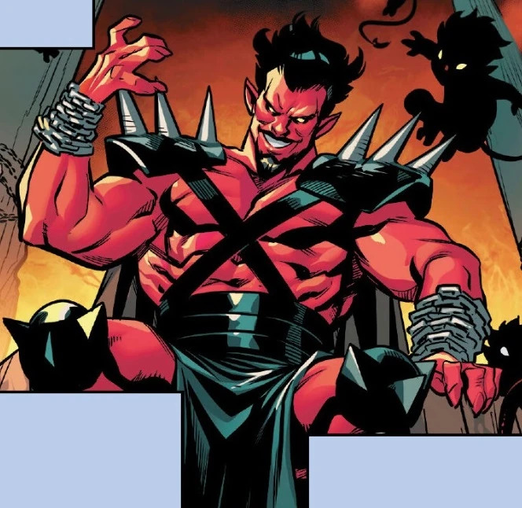
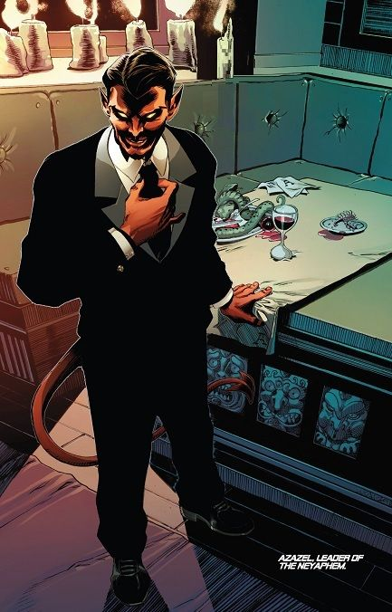
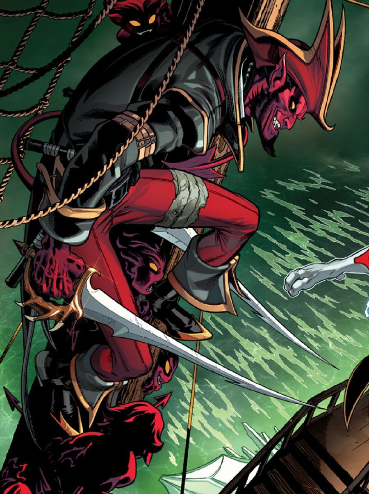
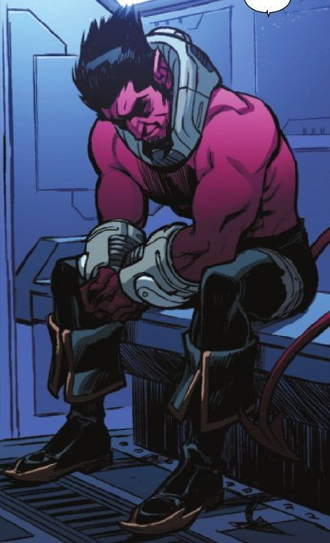
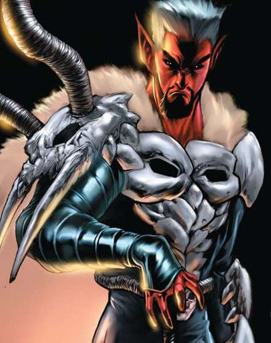
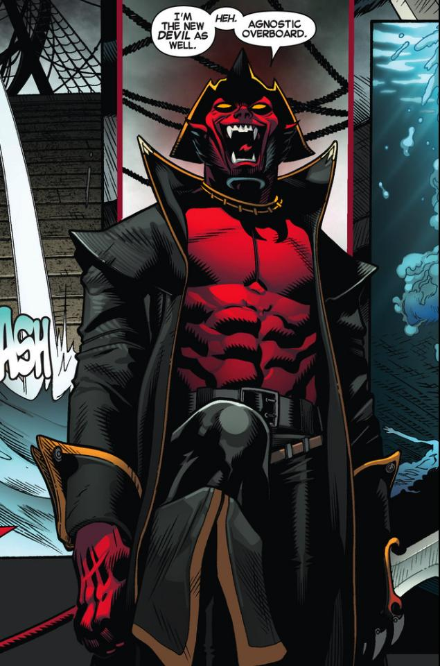

Azazel (Terre-616)


Origines :
On sait peu de choses sur le mutant Azazel
Il proclame être l'un des êtres les plus anciens du monde, faisant partie d'une sous-espèce aux traits démoniaques, les Neyaphem, qui furent bannis par les angéliques Cheyarafim, il y a plusieurs millénaires.
Azazel est d'ailleurs convaincu qu'Angel des X-Men appartient à cette sous-espèce.
Lorsque Margali Szardos s'adonna à la magie, elle ouvrit par accident un trou entre les dimensions, ce qui permit à Azazel de revenir un court instant sur Terre et ainsi d'en « retrouver le chemin ».
Grâce à son pouvoir de téléportation, Azazel fut capable de se rendre sur Terre pendant de courtes périodes.
Tombé amoureux de la vie sur Terre, il se rendit compte qu'avoir des enfants lui permettrait d'y revenir plus facilement.
Il eut donc plusieurs liaisons, la plupart avec des mutantes à l'apparence non-humaine.
L'une d'elle fut Raven Darkhölme, épouse du Baron Christian Wagner, dans les années 60 en Allemagne.
Ce dernier étant stérile, Mystique entretenait plusieurs liaisons pour s'assurer une descendance.
Elle rencontra Azazel, qui se faisait passer pour un homme d'affaires venu d'une île des Bermudes, la Isla Del Demonas.
C'est d'ailleurs lui qui la surnomma Mystique pour la première fois.
La jeune femme tomba amoureuse de l'élégant entrepreneur déguisé qui savait que Raven était une mutante et ils eurent une liaison cachée, mais Azazel y mit un terme, déclarant qu'il n'était pas amoureux mais qu'il souhaitait simplement une descendance.
Au même moment, la compagne secrète de Raven, Irene Adler, qui se faisait passer pour une servante, eut la prémonition qu'Azazel anéantirait la race mutante, sauf si un enfant qu'il croyait être de lui l'arrêtait.
Irene prit alors la forme d'Azazel, et c'est elle qui mit Raven enceinte.
Mystique, sur le point d'accoucher d'un mutant, poignarda à mort le Baron Wagner qui la soupçonnait d'adultère.
Le meurtre fut découvert par les villageois, et Mystique s'échappa en abandonnant le bébé, qui deviendra plus tard le mutant Diablo, au bord d'une rivière.
Azazel, pensant que Mystique était morte, eut plusieurs autres bâtards.









Capacités :
Azazel est un mutant.
Il possède un pouvoir de téléportation similaire à celui de son fils Diablo, et est capable de se téléporter en ouvrant un portail vers une autre dimension, et de revenir à son point de départ grâce à un second portail.
Il est aussi doté d'une agilité surhumaine et semble être immortel, où au moins d'avoir une longévité largement supérieure à la norme humaine.
C'est également un métamorphe, capable d'altérer son apparence pour prendre celle d'un humain normal.
Il est capable de générer des rayons d'énergie paralysante et de manipuler les esprits des autres, en plus de posséder un lien mental avec ses enfants, qu'il peut aussi contrôler mais de manière limitée.
Apparence :
Azazel est un mutant faisant partie des Neyaphem, des êtres à l'apparence démoniaque.
Sa peau est rouge vif, et il possède des yeux jaunes ou dorés, souvent représentés avec des pupilles sombres et un regard perçant.
Ses cheveux sont noirs, généralement longs ou mi-longs, avec des oreilles pointues, des canines légèrement allongées et une longue queue pointue, dont il peut se servir comme d'une arme ou de cinquième membre.